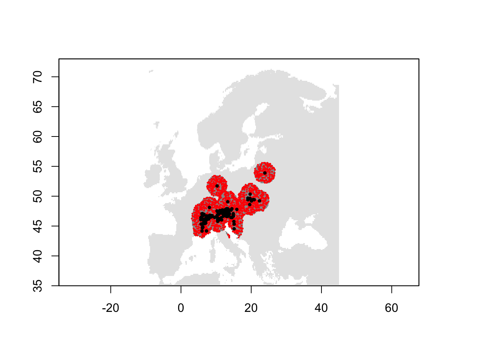
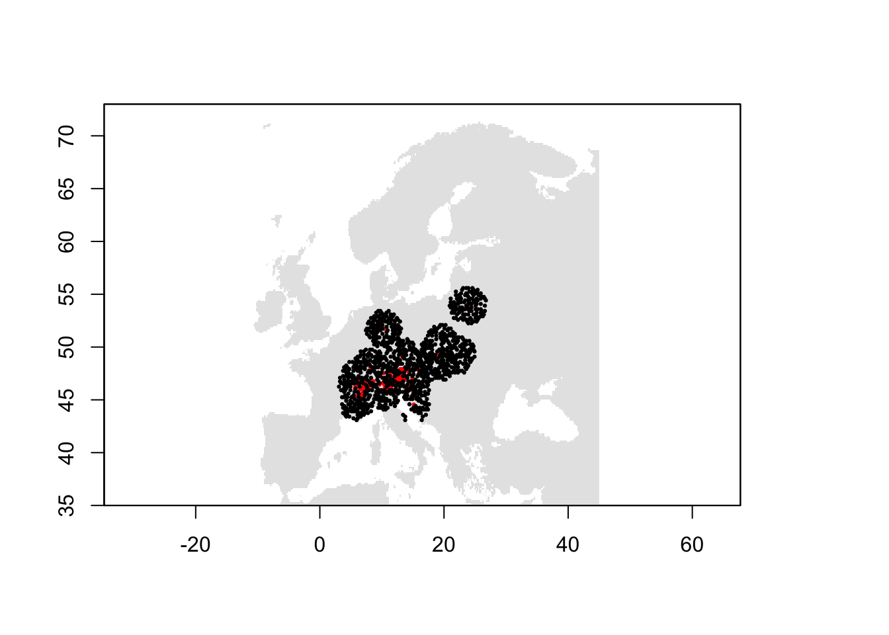

Pseudo-absence and background data
RStudio project
Open the RStudio project that we created in the first session. I recommend to use this RStudio project for the entire course and within the RStudio project create separate R scripts for each session.
- Create a new empty R script by going to the tab “File”, select “New File” and then “R script”
- In the new R script, type
# Session 5: Pseudo-absence and background dataand save the file in your folder “scripts” within your project folder, e.g. as “5_PseudoAbsences.R”
1 Introduction
In the previous sessions, we have worked with very convenient presence/absence data to train our species distribution models (SDMs). However, as you have seen when downloading your own GBIF data, we often have only presence records available. Absence data are also inherently difficult to get because it requires a very high sampling effort to classify a species as absent from a location. For plants, we would need complete inventories of a larger region, e.g. several 100 m plots placed within larger 1 km sample squares. For birds, we would need several visits to a specific region within the breeding season. In both cases, we could still miss some species, meaning that we do not record the species although present (resulting in a false negative).
But what should we do if absence data are not available? Most SDM algorithms (except the profile methods, see session 6) need some kind of absence or background data to contrast the presence data to. There are different approaches for creating background data or pseudo-absence data (Barbet-Massin et al. 2012; Kramer-Schadt et al. 2013; Phillips et al. 2009), although there is still room for further developments in this field and more clear-cut recommendations for users would be certainly useful. Nevertheless, I hope this tutorial will provide some examples of how to deal with presence-only data. For advice on how many background/pseudo-absence points you need, please read (Barbet-Massin et al. 2012).
In this session, we look at four different ways of creating background/pseudo-absence data:
- random selection of points within study area (including or excluding the presence locations) (Barbet-Massin et al. 2012)
- random selection of points outside of study area (Barbet-Massin et al. 2012)
- accounting for spatial sampling bias using target-group selection (Phillips et al. 2009)
- accounting for spatial sampling bias using inverse distance weighting (Kramer-Schadt et al. 2013)
2 Species presence data
I created a virtual species data set with presence points for a dummy species called Populus imagines and sister species Populus spp. The spatial resolution of the data is 5 minutes. You can download the data here or from the moodle page.
Load and plot the data:
library(raster)
library(dismo)
mask <- raster('data/Prac5_Europe5min.grd')
sp <- read.table('data/Prac5_presences.txt', header=T)
# Plot the map and data
plot(mask,col='grey',legend=F)
points(sp[sp$sp=='Populus_imagines',1:2],pch='+',col='red')
points(sp[sp$sp=='Populus_spp',1:2],pch='+',cex=0.3,col='grey20')
3 Background/Pseudo-absence data selection
We use a lot of methods from the dismo tutorials, which are worth looking into (see link here).
3.1 Random selection of points within study area but excluding the presence location
The dismo package has a function to sample random points (background data).
# Randomly select background points from study region
bg_rand <- randomPoints(mask, 500)
# Plot the map and data
plot(mask,col='grey',legend=F)
points(sp[sp$sp=='Populus_imagines',1:2],pch='+',col='red')
points(bg_rand,pch=19,cex=0.3)
So, this function will by default sample from the entire study area independent of the presence points. We can also provide the presence points as additional argument, and by that make sure that random background data are not sampled from presence locations.
# Randomly select background data but excluding presence locations
bg_rand2 <- randomPoints(mask, 500, p=sp[sp$sp=='Populus_imagines',1:2])
# Plot the map and data
plot(mask,col='grey',legend=F)
points(sp[sp$sp=='Populus_imagines',1:2],pch='+',col='red')
points(bg_rand2,pch=19,cex=0.3)
Also, we can define an extent from where random points should be drawn. By default, this extent is increased by 5% at each side. To circumvent this, we set extf=1.0.
# Define extent object:
e <- extent(8,24,46,57)
# Randomly select background data within a restricted extent
bg_rand3 <- randomPoints(mask, 500, p=sp[sp$sp=='Populus_imagines',1:2], ext=e, extf=1.0)
# Plot the map and data
plot(mask,col='grey',legend=F)
points(sp[sp$sp=='Populus_imagines',1:2],pch='+',col='red')
points(bg_rand3,pch=19,cex=0.3)
plot(e, add=TRUE, col='red')
Last, we could also restrict the random samples to within a certain buffer distance. For this, we first create a SpatialPointsDataFrame, then place a buffer around these and sample from within the buffer.
# Make SpatialPointsDataFrame:
pop_imag <- sp[sp$sp=='Populus_imagines',1:2]
coordinates(pop_imag) <- ~x+y
projection(pop_imag) <- CRS('+proj=longlat +datum=WGS84')
# Then, place a buffer of 200 km radius around our presence points
x <- buffer(pop_imag,width=200000)
# Set all raster cells outside the buffer to NA
x <- mask(mask,x)
# Randomly select background data within the buffer
bg_rand4 <- randomPoints(x, 500)
# Plot the map and data
plot(mask,col='grey',legend=F)
plot(x, legend=F, add=T)
points(sp[sp$sp=='Populus_imagines',1:2],pch='+',col='red')
points(bg_rand4,pch=19,cex=0.3)
3.2 Random selection of points outside of study area
Barbet-Massin et al. (2012) also suggested a method to sample pseudo-absences only beyond a minimum distance from the presence points. We can also use the buffering approach from above to achieve this.
# Place a buffer of 100 km radius around our presence points
x <- buffer(pop_imag,width=200000)
# Set all raster cells outside the buffer to NA
x <- mask(mask,x)
# Now, we set all the buffer cells in the mask to NA
mask2 <- mask
values(mask2)[values(x)==1 & !is.na(values(x))] <- NA
# Randomly select background data outside the buffer
bg_far <- randomPoints(mask2, 500)
# Plot the map and data
plot(mask,col='grey',legend=F)
plot(x,legend=F, add=T)
points(sp[sp$sp=='Populus_imagines',1:2],pch='+',col='red')
points(bg_far,pch=19,cex=0.3)
3.3 Accounting for spatial sampling bias using target-group selection
A critical assumption behind the above-mentioned background/pseudo-absence sampling is that the presence points were systematically or randomly sampled from the known distribution and are not spatially biased. In practice, this assumption is often violated, for example when observers go to more easily accessible areas. Phillips et al. (2009) suggested a target-group sampling for this. The idea is that we use the presence points of other groups of species as potential pseudo-absence points to mimic survey effort. These target groups should be collected or observed using the same methods and equipments. So, this approach is kind of assuming that no complete inventories were made by the observers but that there is a chance that if the species had been there it would have been observed along with the others.
Here, we use the sister populus species as target group.
# Randomly select background points from the target group
p <- sample(seq_len(nrow(sp[sp$sp=='Populus_spp',])), 500)
bg_target <- sp[sp$sp=='Populus_spp',1:2][p,]
# Plot the map and data
plot(mask,col='grey',legend=F)
points(sp[sp$sp=='Populus_imagines',1:2],pch='+',col='red')
points(bg_target,pch=19,cex=0.3)
3.4 Accounting for spatial sampling bias using inverse distance weighting
In the last example, we manipulate the background to have the same sampling bias as the presence data (Kramer-Schadt et al. 2013). For example, this is particularly useful if presence records are restricted to easily accessible areas like roads. We use inverse distance weighting to define the sampling density of the presence points and then sample background proportional to that density. Following Kramer-Schadt et al. (2013), we assume a low sampling effort outside the sampling range of the presence data - here a 5% sampling effort.
# Compute inverse distance weighted interpolation and create raster with density layer
idw <- geoIDW(as.matrix(sp[sp$sp=='Populus_imagines',1:2]),
randomPoints(mask, sum(sp$sp=='Populus_imagines')))
idw_r <- predict(mask, idw)## [inverse distance weighted interpolation]# Re-classify density values below 0.05 indicating a 1/20 of the sampling effort
values(idw_r)[values(idw_r) < 0.05] <- 0.05
# Clip to land mass
idw_r <- mask(idw_r,mask)
# Randomly select background data proportional to sampling density in presence data
bg_idw <- randomPoints(idw_r, 500, prob=T)
# Plot the map and data
plot(idw_r)
points(sp[sp$sp=='Populus_imagines',1:2],pch='+',col='red')
points(bg_idw,pch=19,cex=0.3)
4 Workflow for joining presence and background/pseudo-absence data
In session 2, we have already learned how to join species data and environmental data (at 10 min resolution) using the Alpine Shrew as example species. Here, we will revisit this example, sample random background data and join these with environmental data to come up with a dataset containing presences and background data as well as the climatic predictors.
# Load the species presence data (here, the data set from session 1):
load('data/gbif_shrew.RData')
head(gbif_shrew[,1:4])## key scientificName decimalLatitude decimalLongitude
## 1 2873903585 Sorex alpinus Schinz, 1837 46.03147 11.579116
## 2 2251919320 Sorex alpinus Schinz, 1837 47.69411 13.681602
## 3 2330155268 Sorex alpinus Schinz, 1837 48.12057 8.109648
## 4 2843496135 Sorex alpinus Schinz, 1837 47.65534 13.148056
## 5 3010682738 Sorex alpinus Schinz, 1837 47.66000 13.150000
## 6 2269283117 Sorex alpinus Schinz, 1837 46.39159 10.421819# Plot the species presences
library(maptools)
data(wrld_simpl)
plot(wrld_simpl,xlim=c(-12,45), ylim=c(35,73))
points(gbif_shrew$decimalLongitude, gbif_shrew$decimalLatitude, col='red', pch=19)
You have already downloaded the climate data in session 2 and can simply read it back in. We crop it to European extent.
# You may have to adjust the path to your folder structure:
clim <- getData("worldclim", var="bio", res=10, download=F, path="data/clim_data")
# Crop to Europe
clim <- crop(clim, c(-12,45,35,73))What is important to consider is that you kind of arbitrarily chose a scale of analysis by chosing climate data (or other environmental data) at a certain spatial resolution. Here, we chose a spatial resolution of 10 minutes while the species data may actually be at a finer resolution. So, we first make sure that our species data are fit to the spatial resolution, meaning we remove any duplicates within 10 minute cells. We do this by joining the species data with the environmental data (basically, repeating what we had already done at the end of session 2). Then, we can remove the duplicate cells.
# Extract environmental data and raster cellnumbers for the species data
gbif_shrew2 <- cbind(gbif_shrew[,c('decimalLongitude','decimalLatitude')], raster::extract(x = clim[[1]],
y = data.frame(gbif_shrew[,c('decimalLongitude','decimalLatitude')]), cellnumbers=T ))
# Now we remove the rows with duplicate cellnumbers:
gbif_shrew2 <- gbif_shrew2[!duplicated(gbif_shrew2$cells),]
# Actually, we just need the new coordinates:
gbif_shrew2 <- gbif_shrew2[,c('decimalLongitude','decimalLatitude')]We place a buffer of 200 km around the shrew records and sample background points randomly from within the buffer but excluding presence locations (please think about it for a moment whether a different pseudo-absence/background data strategy would be more appropriate for you).
# Make SpatialPointsDataFrame:
presences <- gbif_shrew2
coordinates(presences) <- ~decimalLongitude + decimalLatitude
projection(presences) <- CRS('+proj=longlat +datum=WGS84')
# Then, place a buffer of 200 km radius around our presence points
buf <- buffer(presences,width=200000)
# Create a mask with target resolution and extent from climate layers
mask <- clim[[1]]
values(mask)[!is.na(values(mask))] <- 1
plot(mask, col='grey90', legend=F)
# Set all raster cells outside the buffer to NA.
buf <- mask(mask,buf)
plot(buf, add=T, col='grey60', legend=F)
# Randomly select background data within the buffer, excluding presence locations. We sample 10 times as many background data as we have presences.
bg_dat <- randomPoints(buf, length(presences)*10, p=presences)
points(bg_dat, pch=19, cex=0.2, col='red')
points(presences, pch=19, cex=0.5)
Last, we need to join the presences and background data, and extract the environmental data.
# First, we prepare the presences data to contain a column indicating 1 for presence.
sp_env <- data.frame(gbif_shrew2, occ=1)
# Second, we make sure the background data have the same columns, and indicate 0 for absence.
bg_dat <- data.frame(bg_dat)
summary(bg_dat)## x y
## Min. : 3.083 Min. :43.08
## 1st Qu.: 9.250 1st Qu.:46.58
## Median :13.750 Median :48.58
## Mean :14.292 Mean :48.77
## 3rd Qu.:19.750 3rd Qu.:50.75
## Max. :26.750 Max. :55.58names(bg_dat) <- c('decimalLongitude','decimalLatitude')
bg_dat$occ <- 0
summary(bg_dat)## decimalLongitude decimalLatitude occ
## Min. : 3.083 Min. :43.08 Min. :0
## 1st Qu.: 9.250 1st Qu.:46.58 1st Qu.:0
## Median :13.750 Median :48.58 Median :0
## Mean :14.292 Mean :48.77 Mean :0
## 3rd Qu.:19.750 3rd Qu.:50.75 3rd Qu.:0
## Max. :26.750 Max. :55.58 Max. :0# Third, we bind these two data sets
sp_env <- rbind(sp_env, bg_dat)
summary(sp_env)## decimalLongitude decimalLatitude occ
## Min. : 3.083 Min. :43.08 Min. :0.00000
## 1st Qu.: 9.083 1st Qu.:46.42 1st Qu.:0.00000
## Median :13.150 Median :48.25 Median :0.00000
## Mean :14.037 Mean :48.61 Mean :0.09091
## 3rd Qu.:19.250 3rd Qu.:50.58 3rd Qu.:0.00000
## Max. :26.750 Max. :55.58 Max. :1.00000# Last, we join this combined data set with the climate data.
sp_env <- cbind(sp_env, raster::extract(x = clim, y = sp_env[,c('decimalLongitude','decimalLatitude')], cellnumbers=T) )
summary(sp_env)## decimalLongitude decimalLatitude occ cells
## Min. : 3.083 Min. :43.08 Min. :0.00000 Min. :35779
## 1st Qu.: 9.083 1st Qu.:46.42 1st Qu.:0.00000 1st Qu.:46019
## Median :13.150 Median :48.25 Median :0.00000 Median :50714
## Mean :14.037 Mean :48.61 Mean :0.09091 Mean :50027
## 3rd Qu.:19.250 3rd Qu.:50.58 3rd Qu.:0.00000 3rd Qu.:54492
## Max. :26.750 Max. :55.58 Max. :1.00000 Max. :61389
## bio1 bio2 bio3 bio4
## Min. :-26.0 Min. : 53.00 Min. :24.00 Min. :5092
## 1st Qu.: 67.0 1st Qu.: 81.00 1st Qu.:29.00 1st Qu.:6260
## Median : 80.0 Median : 86.00 Median :31.00 Median :6822
## Mean : 79.6 Mean : 85.67 Mean :30.34 Mean :6899
## 3rd Qu.: 94.0 3rd Qu.: 92.00 3rd Qu.:32.00 3rd Qu.:7559
## Max. :164.0 Max. :107.00 Max. :39.00 Max. :8884
## bio5 bio6 bio7 bio8
## Min. : 78.0 Min. :-126.00 Min. :198.0 Min. :-72.0
## 1st Qu.:217.0 1st Qu.: -77.00 1st Qu.:257.0 1st Qu.:134.0
## Median :229.0 Median : -52.00 Median :279.0 Median :162.0
## Mean :227.8 Mean : -50.93 Mean :278.7 Mean :142.4
## 3rd Qu.:243.0 3rd Qu.: -28.00 3rd Qu.:303.0 3rd Qu.:171.0
## Max. :302.0 Max. : 58.00 Max. :331.0 Max. :204.0
## bio9 bio10 bio11 bio12
## Min. :-87.00 Min. : 40 Min. :-89.00 Min. : 492.0
## 1st Qu.:-18.00 1st Qu.:158 1st Qu.:-34.00 1st Qu.: 637.0
## Median : 9.00 Median :168 Median :-10.00 Median : 768.0
## Mean : 21.32 Mean :166 Mean :-10.96 Mean : 837.8
## 3rd Qu.: 39.00 3rd Qu.:179 3rd Qu.: 6.00 3rd Qu.: 972.0
## Max. :239.00 Max. :239 Max. : 95.00 Max. :2121.0
## bio13 bio14 bio15 bio16
## Min. : 60.0 Min. : 11.00 Min. : 7.00 Min. :167.0
## 1st Qu.: 80.0 1st Qu.: 31.00 1st Qu.:18.00 1st Qu.:223.0
## Median : 91.0 Median : 43.00 Median :27.00 Median :255.0
## Mean :100.6 Mean : 46.66 Mean :25.98 Mean :281.3
## 3rd Qu.:117.0 3rd Qu.: 56.00 3rd Qu.:33.00 3rd Qu.:325.0
## Max. :200.0 Max. :153.00 Max. :48.00 Max. :580.0
## bio17 bio18 bio19
## Min. : 65.0 Min. : 78 Min. : 65.0
## 1st Qu.:104.0 1st Qu.:214 1st Qu.:114.0
## Median :139.0 Median :238 Median :155.0
## Mean :152.8 Mean :264 Mean :171.5
## 3rd Qu.:181.0 3rd Qu.:297 3rd Qu.:209.0
## Max. :474.0 Max. :563 Max. :541.04.1 Spatial thinning
When we prepare our distribution data for species distribution modelling, we also need to think about spatial autocorrelation. Using adjacent cells in model building can lead to problems with spatial autocorrelation. One way to avoid this is spatially thinning the records, for example using the package spThin (Aiello-Lammens et al. 2015). Load the package and look up the help page ?thin.
library(spThin)
# The spThin package requires longitude/latitude coordinates, which we already have.
# Look up the help page and try to understand the function:
?thin
# thin() expects that the data.frame contains a column with the species name
sp_env$sp <- 'Sorex_alpinus'
# Remove adjacent cells of presence/background data:
xy <- thin(sp_env, lat.col='decimalLatitude',long.col='decimalLongitude',spec.col='sp', thin.par=20,reps=5, write.files=F,locs.thinned.list.return=T)## **********************************************
## Beginning Spatial Thinning.
## Script Started at: Sun Feb 21 18:27:12 2021
## lat.long.thin.count
## 1061 1063 1066
## 1 1 3
## [1] "Maximum number of records after thinning: 1066"
## [1] "Number of data.frames with max records: 3"
## [1] "No files written for this run."xy_keep <- xy[[which.max(sapply(xy,nrow))]]
# Which run yields the most presence records?
which.max(sapply(xy,nrow))## [1] 1# Thin the dataset - here, we first extract the cell numbers for the thinned coordinates and then use these to subset our data frame.
cells_thinned <- cellFromXY(clim, xy_keep)
sp_thinned <- sp_env[sp_env$cells %in% cells_thinned,]
# Plot the map and data
plot(mask, col='grey90', legend=F)
points(sp_thinned[,1:2],pch=19,col=c('black','red')[as.factor(sp_thinned$occ)], cex=0.3)# Alternatively, remove adjacent cells separately in presence data and background data:
xy_pres <- thin(sp_env[sp_env$occ==1,], lat.col='decimalLatitude',long.col='decimalLongitude',spec.col='sp', thin.par=20,reps=5, write.files=F,locs.thinned.list.return=T)## **********************************************
## Beginning Spatial Thinning.
## Script Started at: Sun Feb 21 18:27:21 2021
## lat.long.thin.count
## 91 93
## 1 4
## [1] "Maximum number of records after thinning: 93"
## [1] "Number of data.frames with max records: 4"
## [1] "No files written for this run."xy_pres_keep <- xy_pres[[which.max(sapply(xy_pres,nrow))]]
xy_abs <- thin(sp_env[sp_env$occ==0,], lat.col='decimalLatitude',long.col='decimalLongitude',spec.col='sp', thin.par=20,reps=5, write.files=F,locs.thinned.list.return=T)## **********************************************
## Beginning Spatial Thinning.
## Script Started at: Sun Feb 21 18:27:21 2021
## lat.long.thin.count
## 1012 1015 1016 1017 1020
## 1 1 1 1 1
## [1] "Maximum number of records after thinning: 1020"
## [1] "Number of data.frames with max records: 1"
## [1] "No files written for this run."xy_abs_keep <- xy_abs[[which.max(sapply(xy_abs,nrow))]]
# Thin the dataset - here, we first extract the cell numbers for the thinned coordinates and then use these to subset our data frame.
cells_thinned2 <- cellFromXY(clim, rbind(xy_pres_keep, xy_abs_keep))
sp_thinned2 <- sp_env[sp_env$cells %in% cells_thinned2,]
# Plot the map and data
plot(mask, col='grey90', legend=F)
points(sp_thinned2[,1:2],pch=19,col=c('black','red')[as.factor(sp_thinned2$occ)], cex=0.3)
Hint: Another useful function for spatial thinning is gridSample() in the dismo package.
Exercise:
Use the GBIF data for your own species (from practical 1), sample background data and prepare a data set with species and climate data. Use these data to run SDMs.
References
Aiello-Lammens, Matthew E., Robert A. Boria, Aleksandar Radosavljevic, Bruno Vilela, and Robert P. Anderson. 2015. “spThin: An R Package for Spatial Thinning of Species Occurrence Records for Use in Ecological Niche Models.” Ecography 38 (5). Wiley: 541–45. https://doi.org/10.1111/ecog.01132.
Barbet-Massin, Morgane, Frederic Jiguet, Cecile Helene Albert, and Wilfried Thuiller. 2012. “Selecting Pseudo-Absences for Species Distribution Models: How, Where and How Many?” Methods in Ecology and Evolution 3 (2): 327–38. https://doi.org/10.1111/j.2041-210X.2011.00172.x.
Kramer-Schadt, Stephanie, Juergen Niedballa, John D. Pilgrim, Boris Schroeder, Jana Lindenborn, Vanessa Reinfelder, Milena Stillfried, et al. 2013. “The Importance of Correcting for Sampling Bias in Maxent Species Distribution Models.” Diversity and Distributions 19 (11): 1366–79. https://doi.org/10.1111/ddi.12096.
Phillips, Steven J., Miroslav Dudik, Jane Elith, Catherine H. Graham, Anthony Lehmann, John Leathwick, and Simon Ferrier. 2009. “Sample Selection Bias and Presence-Only Distribution Models: Implications for Background and Pseudo-Absence Data.” Ecological Applications 19 (1): 181–97. https://doi.org/10.1890/07-2153.1.